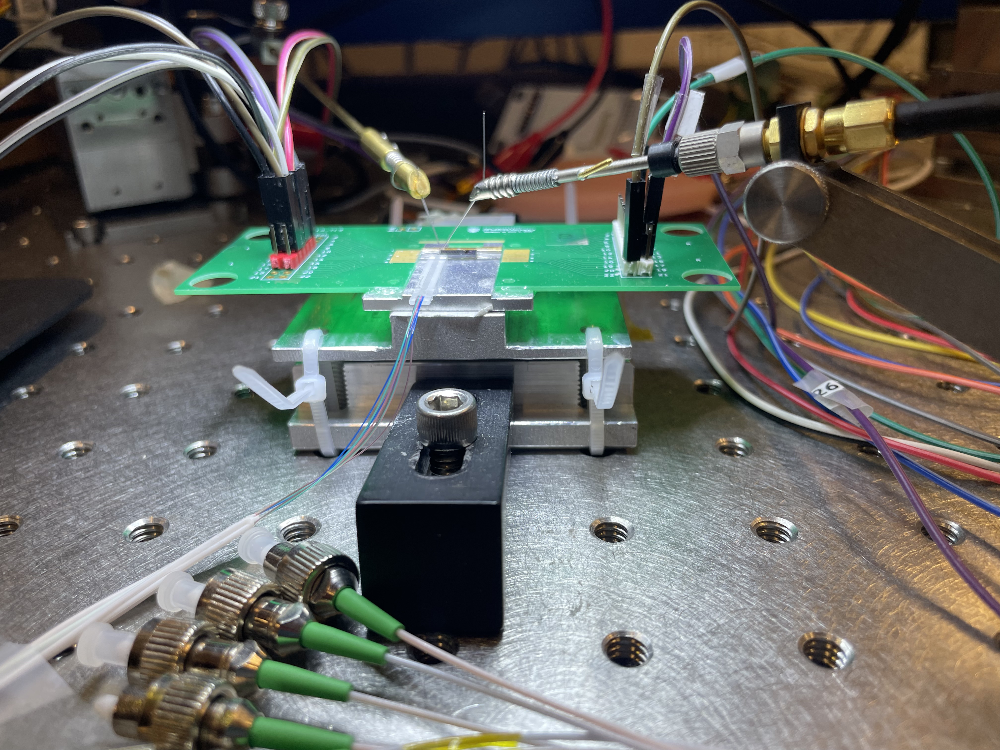
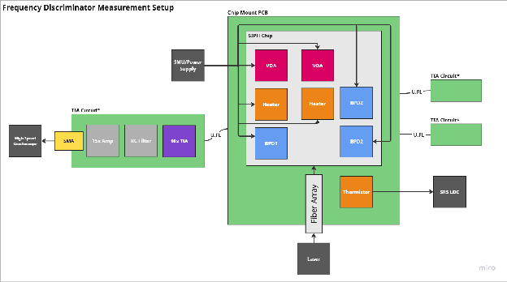
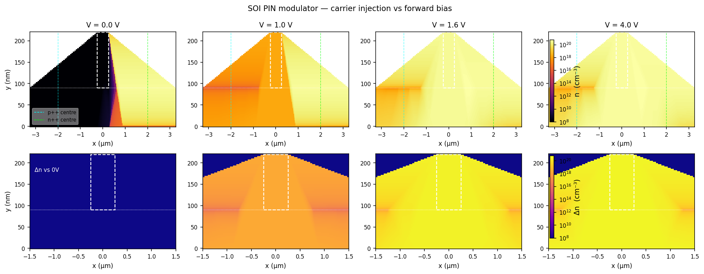
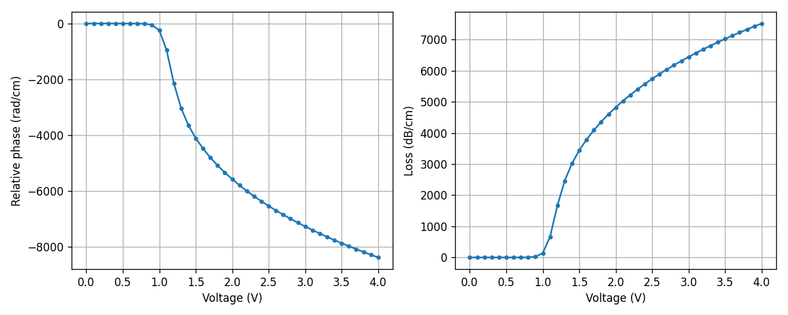

Photonics Lab

I work in a silicon photonics research lab at UBC through the SiEPIC program. The project is to bring up an integrated frequency discriminator chip and use it to measure laser linewidth.
The chip is a Mach-Zehnder interferometer (MZI) fabricated by Advanced Micro Foundry (AMF) in a 220 nm silicon-on-insulator process. It converts a laser's frequency fluctuations into an intensity signal at a balanced photodetector pair. From the detected signal, the frequency-noise power spectral density gives the linewidth.
How the discriminator works
The discriminator is an unbalanced MZI: the input splits, one arm picks up a delay, and a 2x2 multimode-interference coupler recombines the two arms onto a balanced photodiode pair. The operating point is the zero-difference fringe, where intensity noise drops out and phase sensitivity is maximal.
A PIN junction variable optical attenuator (VOA) on the short arm equalizes the two arms. A heater tunes the interferometer phase to hold quadrature. The balanced differential photocurrent is then proportional to the laser's frequency fluctuations.

My work
I wrote the experimental proposal for the bring-up, covering the full measurement chain: reference laser characterization (benchtop tunable source at 1550 nm and a telecom DFB in a butterfly package, through the OEwaves OE4000 and a delayed self-heterodyne setup), TIA board bring-up (OPA858 decompensated op-amp), PD-bias board, optical I/O through edge couplers, loss matching by biasing the PIN attenuator, MZI interference and quadrature lock via the heater, discriminator calibration with a known frequency-modulation tone from an AWG, and linewidth extraction from the frequency-noise PSD using the beta-separation line.
VOA simulation
As a supporting piece, I ported the lab's Lumerical CHARGE and MODE simulation pipeline to open-source Python tools (DEVSIM for drift-diffusion, femwell for the eigenmode solve). The simulation models the PIN VOA's cross-section: a 220 nm SOI rib waveguide with lateral p++ and n++ implants, sweeping forward bias from 0 to 4 V and computing the effective index change from injected free carriers.
Carrier density maps at four bias points:

Effective index vs. voltage (Python pipeline vs. Lumerical reference):

Equipment
The lab bench includes a Keysight B2902A source-measure unit pair, an OEwaves OE4000 linewidth analyzer, a Rigol DG1022 AWG, and an ILX LDM4980 laser diode mount with temperature control.
Repository
VOA simulation: github.com/georgesleen/frequency-discriminator-voa-simulation